Virnel Louise De Guzman
Senior Product Designer
Portfolio

Hi, I'm Virnel! I'm a Senior Product Designer with 6+ years of experience designing and leading digital products from end to end. I focus on research-driven, AI-integrated product design that balances user needs with business impact and scalable systems.
Kita
Your Smart Wallet & AI Financial Companion
Fintech · Financial Inclusion UX


Project Overview
Kita [Filipino: "earnings" / "to see"] is a smart wallet paired with an AI financial companion that helps users save, manage, and understand their money through personalized insights and guidance — while keeping them fully in control of every financial decision.
It's built for Filipino informal and gig workers — freelancers, social media sellers, ride-hailing drivers, and anyone with irregular income — whose earnings are real but rarely tracked, saved, or understood in a way that leads to action. Most finance apps tell people what already happened: a transaction log, a static balance. Few help them answer the questions that actually matter — "Can I afford this?" "How much should I save this week?" "Will I have enough for rent?" "Why am I always running out of money?" Kita's AI companion is designed to meet users at that question, turning raw earnings data into timely, personalized guidance instead of just charts.
I designed and built Kita end-to-end — from concept and user research through UX/UI design to a working front-end and back-end implementation — as a self-initiated product exploring financial inclusion for the Filipino workforce, aligned with BSP's digital finance goals.
Details
- RoleProduct Designer
- IndustryFinancial Technology
- PlatformWeb and Mobile App
- TimelineJuly – August 2026
- ToolsFigma
Design Process
🔍 Understanding the Informal Worker's Money Habits
I started by mapping out who Kita is actually for: someone who earns from freelancing, sells on social media, drives for ride-hailing apps, or otherwise lives on irregular income. I looked at what they already use to manage money today — physical ledgers, GCash, cash set aside at home — and where those tools fall short.
Key insights:
• Income is irregular, so budgeting apps built around a fixed monthly salary don't fit how these users actually earn
• Existing apps are good at telling users what already happened, but few help them decide what to do next — "Can I afford this?", "How much should I save this week?", "Will I have enough for rent?"
• Trust in formal financial institutions is low, so guidance needed to feel personal and low-risk rather than corporate


🧭 Defining the AI-First Core Loop
Rather than compete with established e-wallets on payments alone, I made the AI companion the hero of the product — the thing that gives ordinary Filipinos something they could never normally afford: a personal financial advisor. I scoped Kita around four focused pillars: smart wallet, savings goals, AI financial companion, and personalized financial insights — deliberately keeping the MVP buildable rather than a full marketplace.
🔹 What makes the AI companion useful is that it's actionable, not just descriptive. For example:
• "Your electricity bill is due in 6 days. Based on your recent income, setting aside ₱250 today would keep you on track."
• "You spent 18% more on food this month, but you're still on pace to reach your emergency fund."
🔹 Other key UX decisions:
• Manual + quick-log earnings entry, designed for one-handed use on the go
• Goal-based savings pockets tied to real needs — tuition, emergency fund, fare
• In-app-only peer transfers to keep the MVP scoped and compliant

🎨 Design Execution
I translated the core flows into low-to-high fidelity wireframes and a full UI system, designed to be legible and low-friction for users who may not be highly tech-fluent.
Final deliverables included:
• [e.g. Complete mobile UI kit and design system]
• [e.g. Onboarding, earning log, savings, and AI companion/insights flows]
• [e.g. Accessibility considerations — large tap targets, icon-first navigation, Filipino/Taglish copy]

💻 From Design to Prototype
Rather than a static case study, Kita was designed as a full interactive prototype — mapping the smart wallet and AI companion experience end-to-end so the product could be tested and felt, not just described.
• [e.g. High-fidelity prototype covering onboarding, wallet, savings pockets, and AI insights flows]
• [e.g. Interaction and micro-copy detailing to simulate a real, working app]
• [e.g. Usability testing conducted with X informal workers to validate the core flows]

Outcome
🧪 Where Kita Stands
[Summarize current status — e.g. working prototype, pilot with family business network, number of test users, or next milestones if not yet launched.]
• [Outcome/metric 1]
• [Outcome/metric 2]
🚧 What's Ahead
The hardest part of Kita was never going to be the UX. The real challenges are the ones every fintech founder faces: licensing or partnering for wallet functionality, earning users' trust, acquiring users at a reasonable cost, and building a sustainable business model around a product that serves people the formal financial system often overlooks.
Kita reflects how I work as a designer — grounded UX thinking paired with product thinking that goes beyond individual screens to ask what the product vision is, how it should be positioned, and how it fits into people's lives. It's a product born from lived understanding of the Filipino informal worker's relationship with money — designed, from the start, as if it could become a real company.

Explore Other Case Studies
MAPS
Math Academic Progress-tracking System
EdTech · Academic Platform Design · Korean Hagwon Management
Project Overview
MAPS, the Math Academic Progress-tracking System, is the operational backbone for teachers, directors, and administrators at Korean private math academies (학원 / hagwon). It handles lesson planning, student progress tracking through the proprietary VP (Value Point) system, and the monthly reports sent directly to parents.
The existing MVP had been designed and built as a forced standalone system, treated as its own separate application even though it was never meant to run independently of HEMS (Hybrid Education Management System), the platform it was always intended to be part of. This, combined with a feature-first build process that skipped UX planning, left the product with usability debts that could no longer be resolved through incremental fixes. When I was assigned on December 15, 2025, the brief was to redesign MAPS as a single-page (one-pager) module, integrated into HEMS as one of its menus, without being constrained by what already existed.
Details
- RoleUX Design Lead
- IndustryEducation / EdTech · Hagwon Management
- PlatformWeb Application
- TimelineDec 2025 – Mar 2026
- TeamW Soft Labs
- ToolsFigma, Materio UI Kit, Claude, Obisidian
Design Process
🔍 Getting to the Root of the Problem
Before touching a single wireframe, I requested access to all MAPS files and documentation on December 12, 2025, and conducted a full UX audit of the live product. By that point, MAPS was already running a beta across 15 academies, with 150 instructors actively using the system to manage and track progress for over 3,000 enrolled students — so the stakes of getting the UX right were real, not hypothetical. Combined with five rounds of real teacher and director feedback collected via Confluence from November through December, plus a formal Beta Testing UX Analysis covering 23 identified UI/UX issues across the November 6 to 19 beta period, a clear failure pattern emerged.
The beta testing period drew on direct input from 7+ users across the system's three roles: 1 CEO/leadership stakeholder in a dedicated strategic feedback session, 1 academy director across two separate feedback sessions, and 5+ teaching staff through written feedback and verbal interviews, validated against a technical feasibility session with the development team. This qualitative sample sat against the backdrop of the full beta deployment, spanning 15 academies, 150 instructors, and over 3,000 enrolled students under management, giving the feedback real operational weight.
Users weren't failing because the system was complex. They were failing because the system was designed for the database, not for the person in front of it.
The 23 issues clustered into five themes, weighted by severity. Information Architecture Mismatch was rated Critical severity and flagged directly by CEO-level strategic feedback as the highest-impact gap. Interface Localization (5 of the 23 issues, 22%) and Input Interaction Friction (4 of the 23 issues, 17%) were both rated High severity and affected daily operations across every user group. Visual Design and Readability accounted for 2 of the 23 issues (9%) at Medium-High severity, largely tied to PDF report quality. Workflow Flexibility and Control, covering the inability to edit or delete entries, was rated High severity and cited as a daily blocker by teaching staff specifically.
Our audit and beta testing showed:
• Too many clicks for basic tasks. Creating a learning plan required 10+ clicks through multiple pages; entering test scores required navigating deep into student profiles
• VP assignment was opaque. Teachers couldn't see why numbers looked different than expected
• Navigation was deeply nested with no consistent hierarchy across roles
• Directors had a completely broken approval queue. Plans submitted by instructors simply didn't appear, forcing manual KakaoTalk follow-ups
• HQ had no cross-academy visibility. The System Analytics Dashboard displayed "Failed to load analytics" with no fallback
• No design system. Inconsistent patterns across every page
• Korean localization was missing across critical UI elements, creating daily cognitive friction for the entire user base
• No ability to edit or delete entries after creation. Teachers had to contact admins to fix even simple mistakes
The beta analysis identified a fundamental conceptual model gap: the system was built as a data entry tool, but users needed a diagnostic decision-support dashboard. That single insight became the organizing principle of V2.
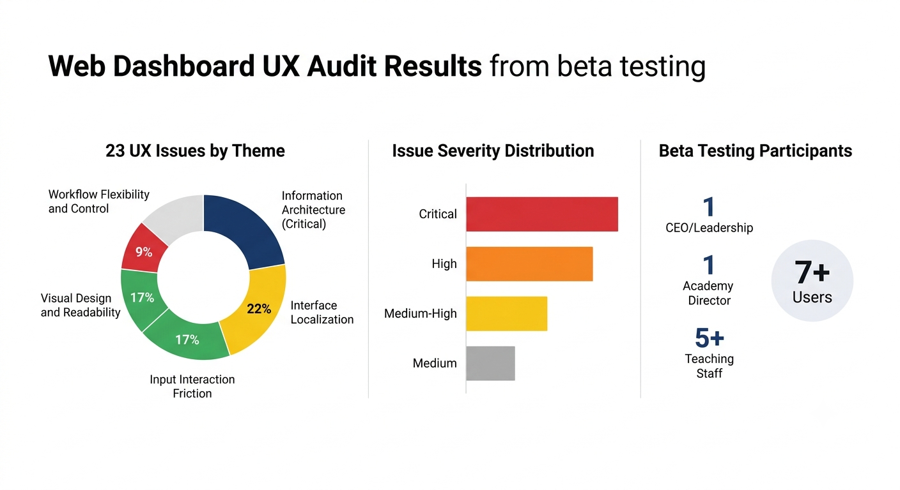
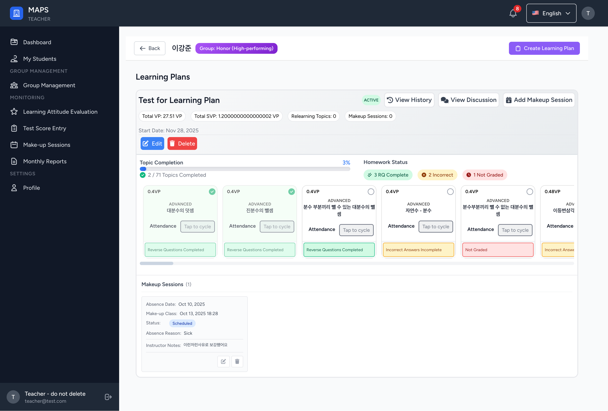
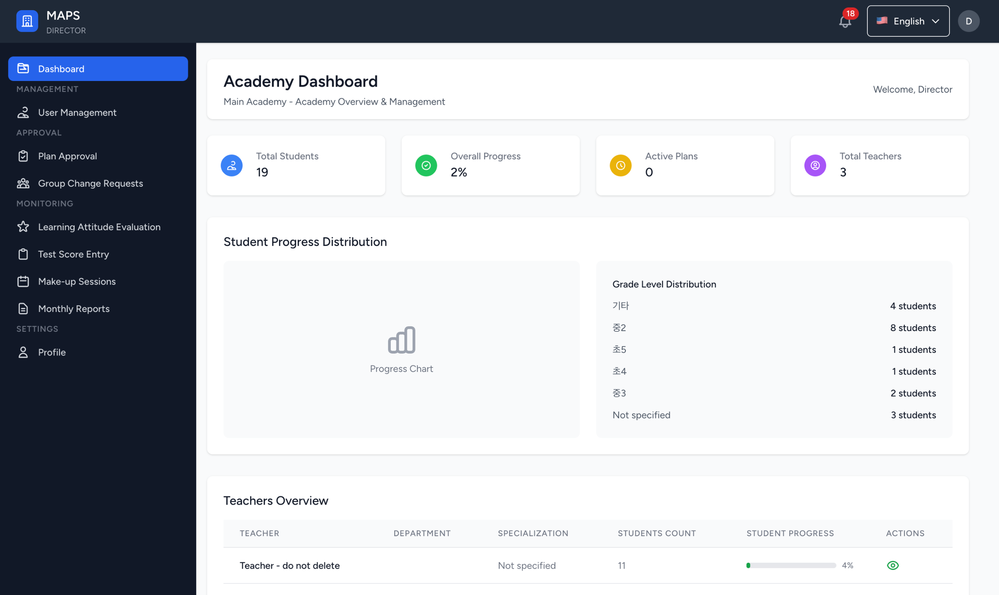
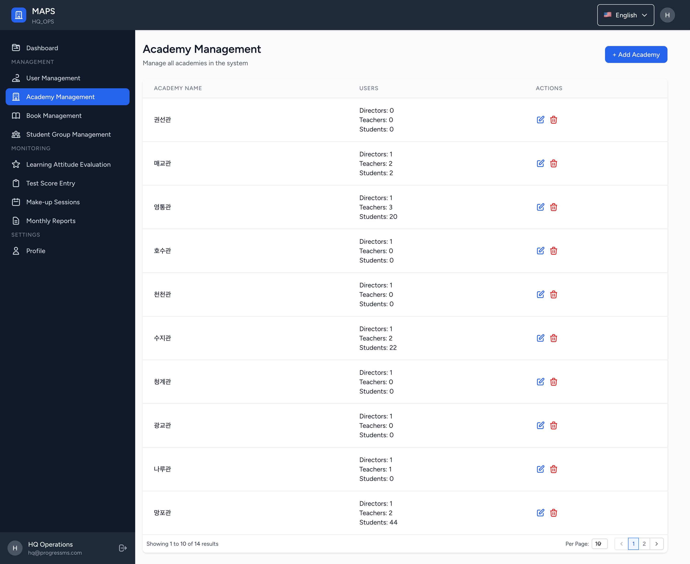
👥 User Personas
Research and beta testing produced three distinct user personas, each with documented pain points and clear design implications.
Jimin Park (박지민) — The Dedicated Teacher
Age 28, full-time math instructor managing 30 students across 4 class levels. Logs into MAPS 2 to 3 times daily. Spends her entire Monday off finishing monthly reports manually because the system offers no automation. Keeps a personal Excel spreadsheet as backup because she doesn't trust the data.
Pain points: 10+ clicks to create a learning plan, no student search box, no duplicate book detection, no approval status visibility, and monthly reports that require manually copying data from three separate sections.
Sunho Kim (김선호) — The Busy Approver
Age 42, Academy Director overseeing 3 instructors and 12 students. Prefers iPad. Arrives each afternoon to an approval queue that shows empty despite instructors having submitted plans, forcing him to follow up via KakaoTalk. When the queue works, approving 8 plans one by one takes 30 to 40 minutes.
Pain points: Broken approval queue, inaccurate dashboard metrics, no bulk approve, and a system that makes him feel like an approval button rather than a leader.
Hyejin Lee (이혜진) — The System Guardian
Age 35, HQ Operations Manager across 10 academy locations and 28 instructors. Highly technical. Starts every day by opening the System Analytics Dashboard, which has been showing a failed load error for 3 days straight.
Pain points: No executive reporting capability, test data polluting all metrics, no cross-academy search or comparison, and zero visibility into system usage patterns.
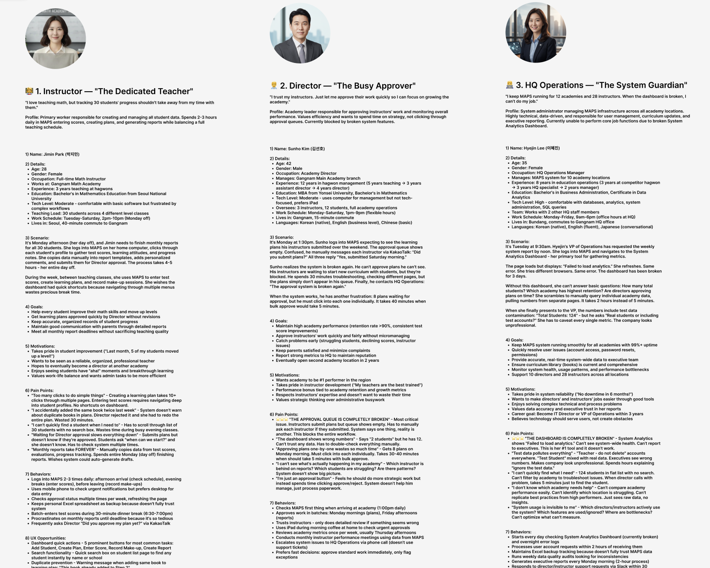
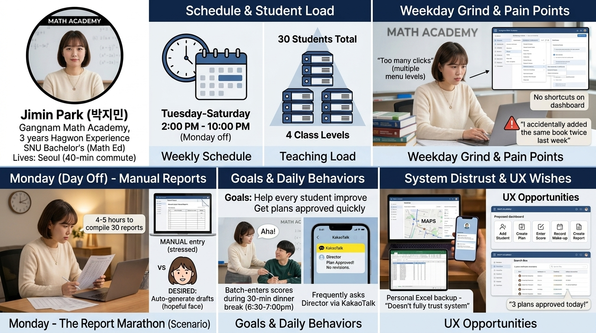
🔬 Research & Competitive Analysis
Research was conducted across three comparable platforms to benchmark MAPS against existing solutions in the Korean education market, alongside three UX case studies of Korean academic management systems. Research focus was narrowed per PM's direction: prioritize clarity for non-technical users, meaning teachers, directors, and HQ operators.
Canvas LMS, Global LMS adapted for Korean institutions, is feature-rich and responsive but too complex for hagwon use. Teachers need lightweight grade entry, not a university-level LMS. Takeaway: stay task-focused and avoid feature bloat.
클래스팅 (Classting), Korean K-12 and hagwon platform, has clean Material Design, strong mobile responsiveness, and intuitive color-coded performance indicators, but lacks math-specific diagnostic depth and requires 4+ clicks for common tasks. Takeaway: differentiate through diagnostic depth and fewer clicks.
매쓰홀릭 (Matholic), Math-specialized diagnostic platform, leads the market in math-specific diagnostics and curriculum alignment but carries a dated, desktop-only interface with overwhelming information density. Takeaway: combine Matholic's diagnostic depth with a modern, clean UI.
Case Study Research: Korean Academic Management Systems
SNU Genie (Seoul National University) showed that legacy systems can be transformed by reorganizing around user needs instead of admin structure. Lesson: role-based dashboards should reflect how users think, not how the database is organized.
Token (Secondary School Disciplinary System) showed empathy can be designed into even bureaucratic interfaces. Lesson: design for understanding, not just recording.
Hagwon Management Systems — Cost of Poor UX confirmed the stakes: when official platforms fail, schools migrate to consumer apps like Band and ClassDojo instead. Lesson: if V2 doesn't solve real friction, it gets abandoned for whatever's easier.
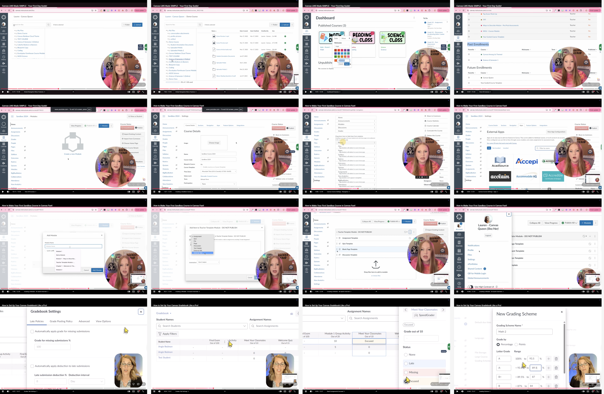
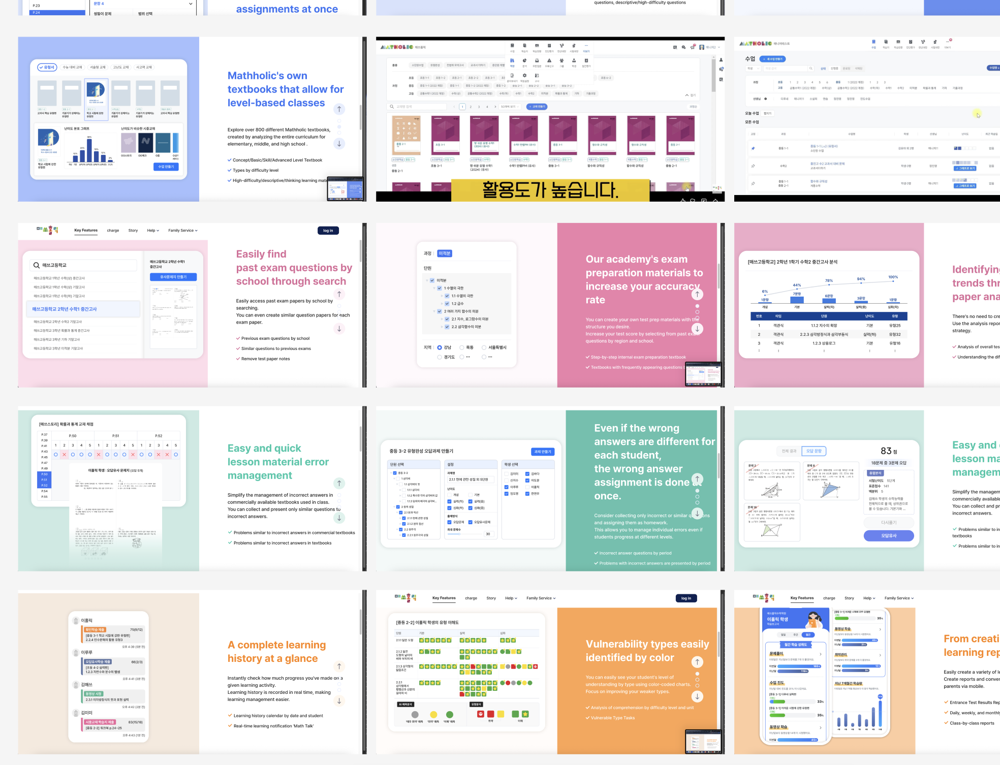
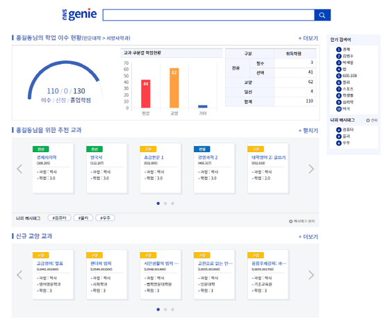
🧭 Designing for Role, Not for Feature
With research, beta findings, and stakeholder directives in hand, I led the full IA-through-prototype pipeline across all three user roles.
Key design decisions:
• Role-based navigation architecture — Instructors get a horizontal 6-tab bar (VP Progress, Test Scores, Learning Attitude, Makeup Sessions, Evaluation, Performance Prep) for quick student data switching; Directors get a bottom tab navigation tuned to approval workflows; HQ Operators get three tab groups — Management, Performance, and Monitoring — plus bottom navigation for broader area access
• Diagnostic dashboard, not data entry table — The core paradigm shift from the beta analysis. The student view was redesigned from an alphabetical list to a problem-first display: Normal / Needs Attention / Critical status overview at the top, with quick filters by Homework / Progress / Test issues, and student cards showing progress bars, trend indicators (↑ → ↓), and last-updated timestamps. Time to identify a problem student: under 30 seconds versus 10+ minutes in the current system
• VP system transparency — Real-time running VP counters, visible Book → Unit → Topic hierarchy, and inline breakdowns showing how learning group factors (HN, AC, ST, RS) affect the final calculation
• Bilingual Korean/English interface — A critical-priority finding from beta testing. Korean was deprioritized in the MVP, creating daily cognitive friction for every user. V2 introduces bilingual display patterns (e.g., AC - Achieve / 성취) across dropdowns and labels, Korean-primary buttons and actions, and fully Korean parent-facing monthly reports. English is the design-first language with Korean translation as the immediate next phase
• Edit and delete throughout — Beta testing found teachers were afraid to enter data incorrectly because mistakes required admin intervention to fix. V2 enables inline edit and delete with confirmation dialogs, session-level undo, and an audit log visible to Directors for transparency
• 3-level homework input — Replacing the binary checkbox (done / not done) with a three-state radio system: Complete (≥70%), Partial (30–70%), and Incomplete (<30% — the default). Color-coded green/yellow/red. Auto-saves on selection with no submit button required. Estimated 75% reduction in homework update time
• Student search and batch operations — Type-ahead search with fuzzy matching, filter by grade and group, and recent students shortcut — replacing the scroll-through-100-names workflow that beta users cited as a daily friction point. Batch test score entry for entering one test across multiple students simultaneously
• Icons over text wherever possible — Per PM direction, reducing localization burden and improving scannability across both language contexts
• Modular for HEMS integration — Since MAPS will eventually become a single "Progress Tracking" tab within HEMS, every component — tabs, data tables, student cards — was built to fold cleanly into the broader HEMS system without major rework
🖌️ Design Execution
Information Architecture
Information Architecture came first, establishing the full navigation hierarchy and menu structure across all three roles before any flows or screens were considered. The existing MVP had no coherent IA — menus were deeply nested, role boundaries were unclear, and there was no logical grouping of related functions. The V2 IA restructured everything from the ground up, defining what each role could access, how features were grouped, and how the three role contexts related to each other within the same system. This became the foundation every subsequent design decision was built on.
User Journey Maps and User Flows
With the architecture established, User Journey Maps and User Flows were developed for each role to understand how users move through the system to complete their core tasks. Journey maps captured the full experience across touchpoints, including the emotional lows (waiting for approval with no status feedback, spending an entire day off on reports) alongside the functional steps. User flows then translated those journeys into precise task paths: how a teacher creates and submits a learning plan, how a director processes an approval queue, how HQ pulls a system-wide report. These flows surfaced edge cases and decision points that would not have been visible from the IA alone, and directly shaped how screens were sequenced in wireframes.
Low-Fidelity Wireframes
Low-fidelity wireframes were completed next across all three roles, one dedicated Figma page per role. Wireframes established layout logic, navigation hierarchy, and content priority without introducing any visual decisions that might distract from structural feedback. This gave stakeholders a clear skeleton to react to: where things lived, how tabs were organized, what appeared above the fold, and how data was grouped on each screen. The Instructor, Director, and HQ wireframe pages each went through review before the work advanced to high fidelity.
Design System and Localization
The type system pairs Inter for all UI elements with Pretendard for Korean-language content. Pretendard was chosen specifically for its performance with Korean characters at small sizes, which matters when student names, academy names (영통관, 천천관), and group labels appear inside dense data tables. All table cells were tested with short Korean names (김) and long compound names (15+ characters) to ensure graceful truncation with tooltip fallback.
The Materio UI Kit was adopted as the main design standard for this redesign, chosen to keep MAPS visually and structurally uniform with the design system already developed for the existing HEMS app. Components, spacing conventions, and interaction patterns were built on top of Materio's foundation so that once MAPS is integrated as a HEMS menu item, it reads as a native part of the system rather than a bolted-on module.
The color system uses MAPS Yellow and MATH JKL Blue as brand primaries, MATH JKL being the hagwon business's own brand identity, with a semantic layer of Success Green, Warning Yellow, and Error Red for all status indicators across student cards, approval queues, and VP progress displays. The 4px base grid and 12-column layout at 1440px held consistently across all three role contexts, with the design system page serving as the single source of truth for spacing, component usage, and color application.
Component Architecture
The file uses a componentized structure built on Materio (Material Design Figma UI Kit) extended with a custom design system page. Core reusable components include Instructor Tabs, Director Tabs, HQ Operations Tabs, a Data Table component, and a Student Card component, each with defined properties and variants. Componentization was a deliberate call given the three-role surface area: any change to a shared element like the student record or data table needed to propagate consistently without manual updates across 16 Figma pages.
This modularity also directly serves the HEMS integration constraint. Since all MAPS functionality will eventually live inside a single HEMS menu tab, components needed to be portable and self-contained rather than tightly coupled to MAPS-specific layouts.
High-Fidelity Screens and Screen-Level Decisions
The Instructor view centers on a horizontal 6-tab bar (VP Progress, Test Scores, Learning Attitude, Makeup Sessions, Evaluation, Performance Prep) placed at the top of the screen. This reflects how instructors actually work: they move laterally across data types for the same student, not vertically through menus. Each tab surface is self-contained, with student context persistent across tab switches.
The Director dashboard was rebuilt around three zones: Action Required summary cards at the top (Pending Approvals, Delayed, VP Alert, Total Students), a Teacher VP Progress monitoring table in the middle showing Achieved VP, Required VP, rate, and On Pace or Delayed status per instructor, and the Learning Plan Approval queue at the bottom with All, Pending, Approved, and Rejected tabs plus inline Approve, Reject, Comment, and View actions. The goal was to give a Director everything needed to run a Monday morning approval session without leaving a single screen.
The HQ view uses three tab groups: Management (Dashboard, Users, Academies, Book Management, Student Group Management, VP Config), Performance (Instructor Performance, Academy Performance, System-Wide Progress), and Monitoring (Learning Attitude Evaluation, Test Score Entry, Makeup Sessions, System Reports), plus a bottom tab bar for broader navigation. This structure mirrors how HQ actually divides its responsibilities — administration, analytics, and operational oversight are distinct workstreams and the navigation reflects that.
Authentication flows were designed as a complete standalone system for V2, covering Register, Login, Verify Email, Two Steps, Forgot Password, and Reset Password, each with full variant states. These are temporary until HEMS single sign-on integration is built, but were designed with that migration in mind.
AI-Powered Usability Testing
To validate the high-fidelity screens before handoff, I ran AI-powered usability testing using Attention Insight across the Instructor, Director, and HQ dashboards. Averaged across all three, the design achieved a 58% Clarity Score, landing solidly within the Optimal clarity range (57–94%), with CTA visibility on the strongest-performing dashboard reaching 3.9% — above the 3.4% platform benchmark. Attention and Focus Maps consistently showed concentrated, purposeful focus on key content areas — student data, approval queues, and progress metrics — rather than scattered attention, confirming the layouts were guiding users where intended.
The tool also flagged a handful of minor refinements ahead of handoff — sharpening CTA prominence with sticky, high-contrast styling, tightening whitespace to surface more content above the fold, and promoting filters and pending-approval actions for faster access. These were incorporated as a final polish pass on top of an already solid foundation.
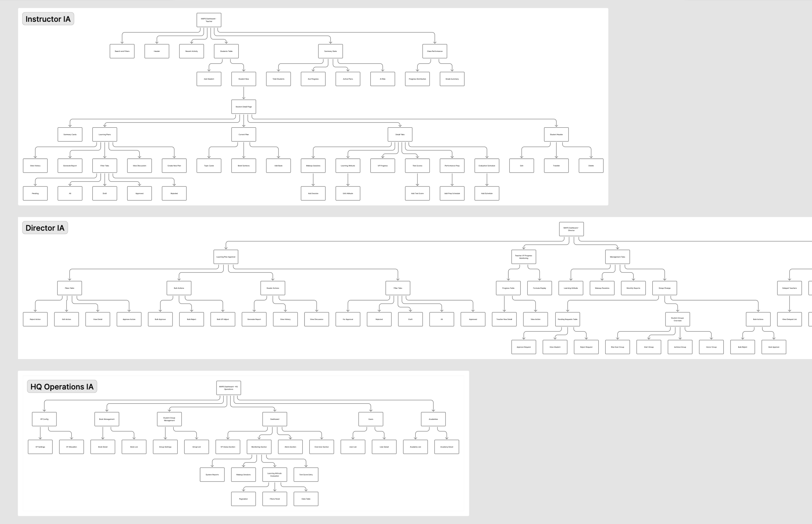
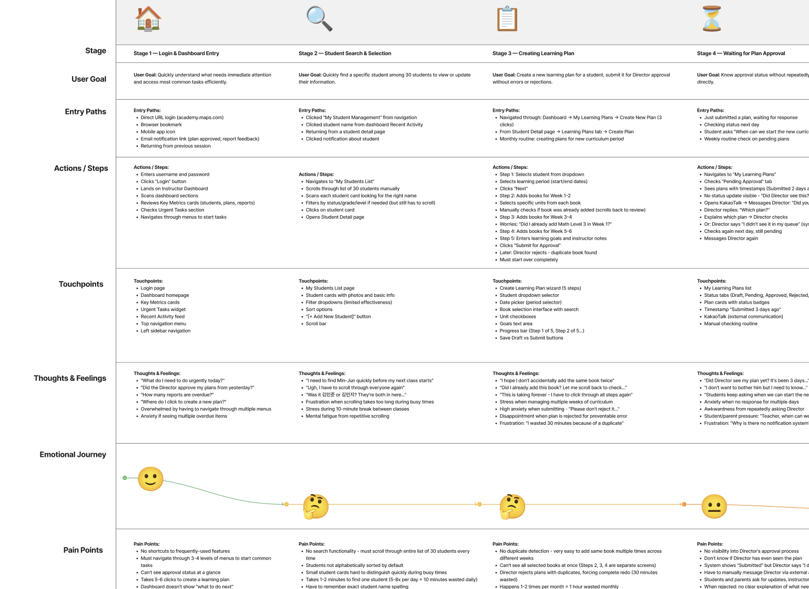
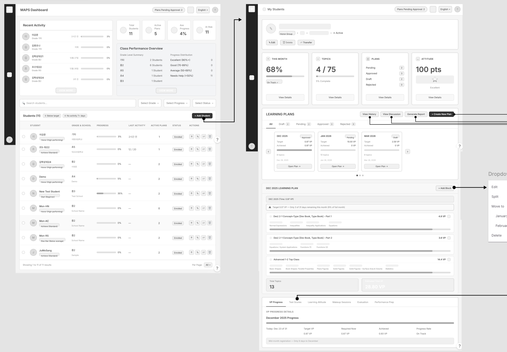
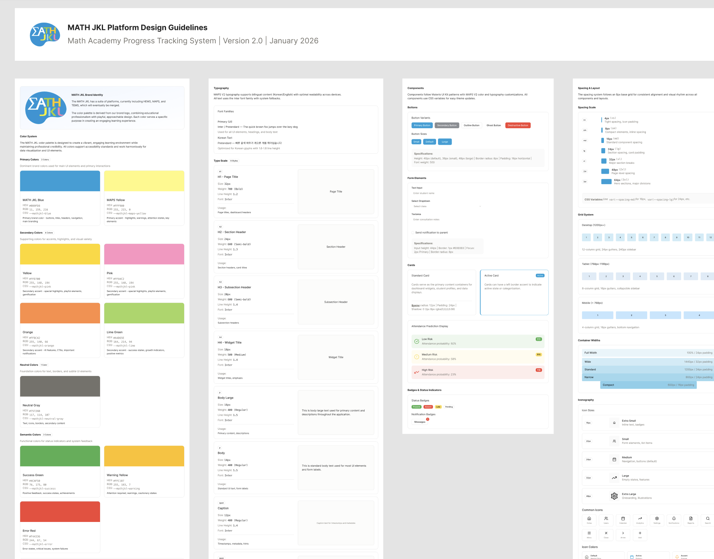
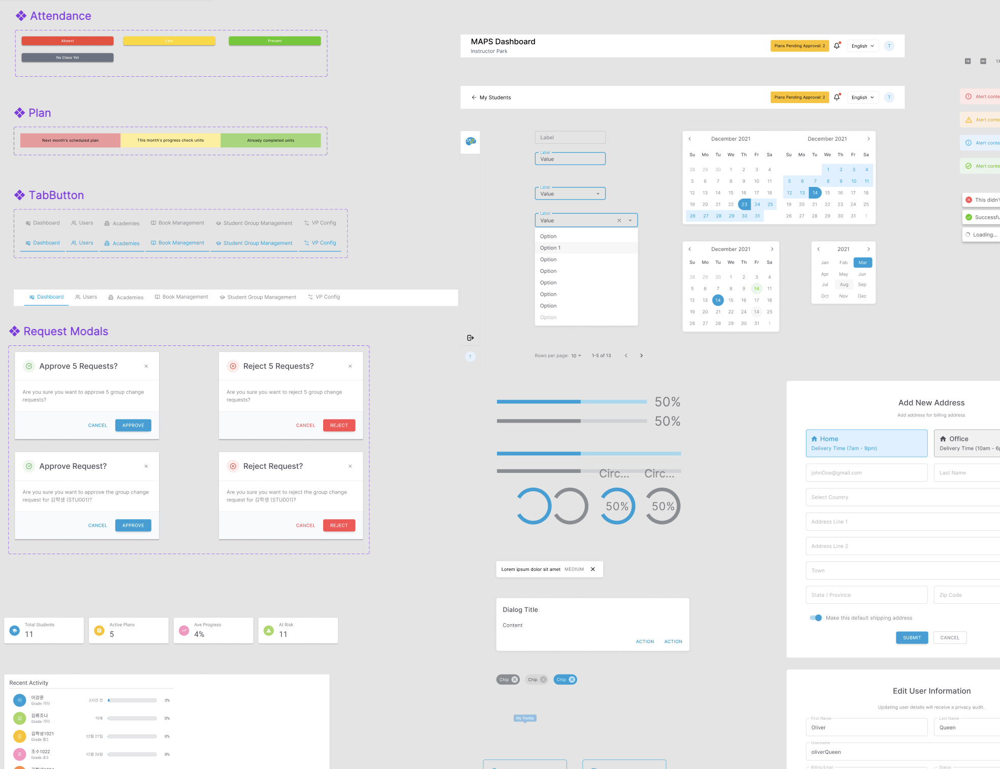
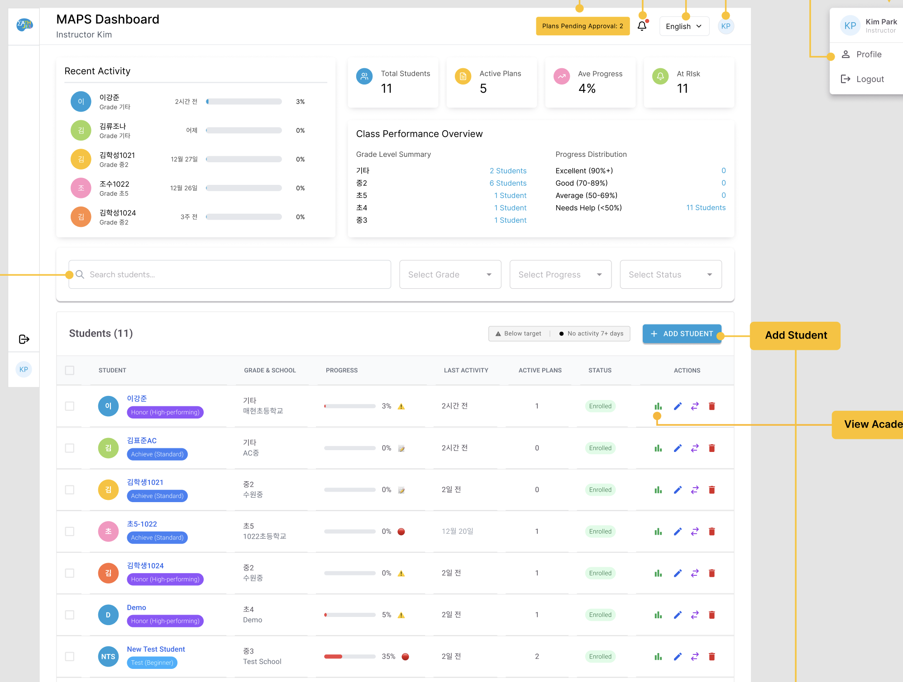
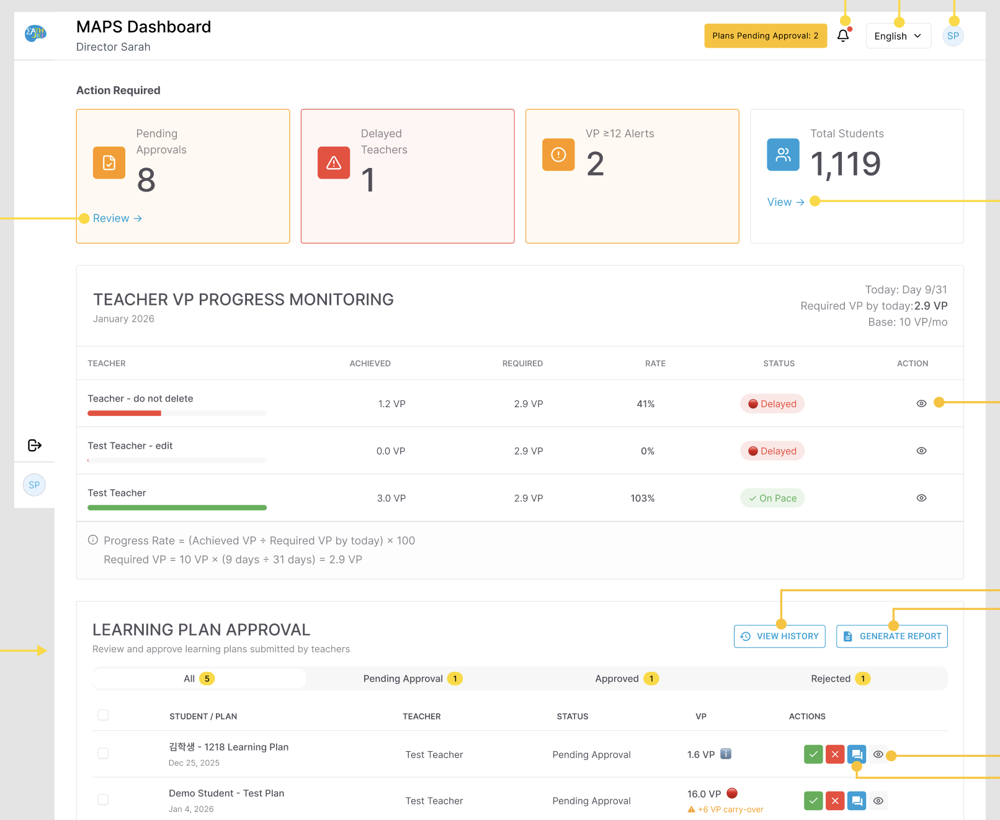
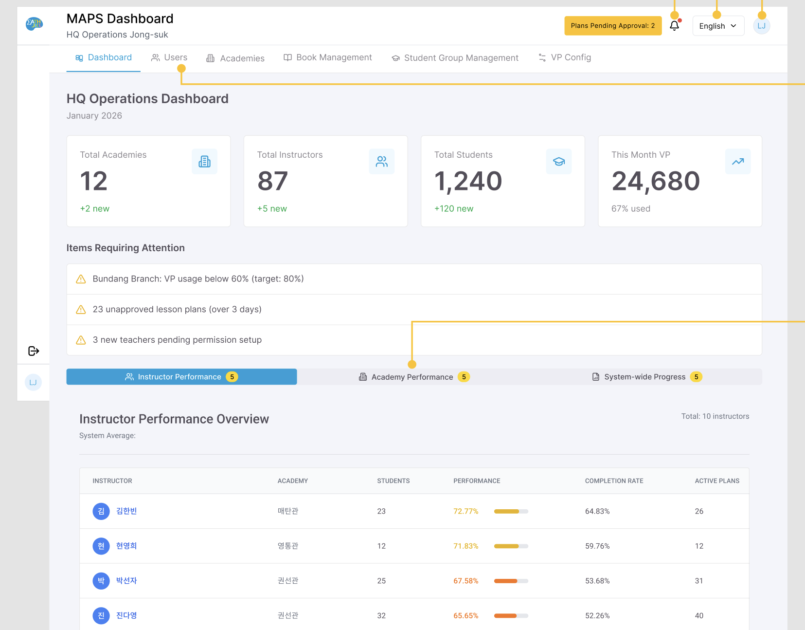
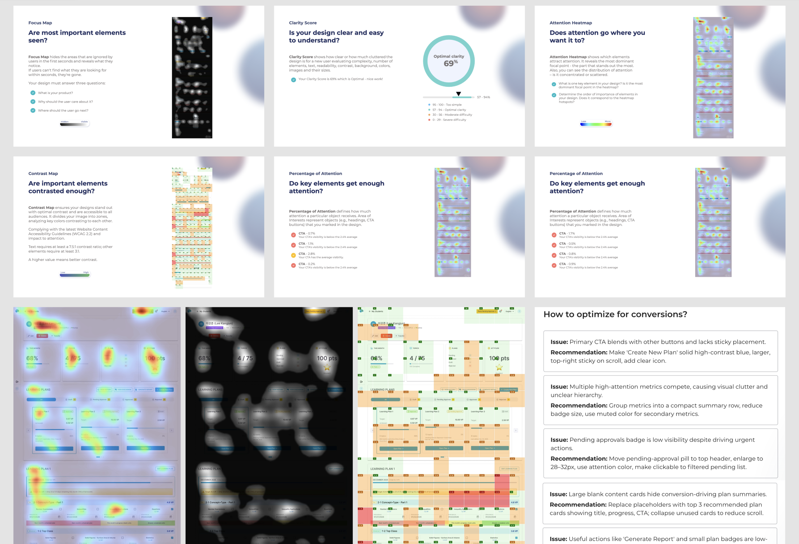
Outcome
🖼️ Design Status
All three roles have complete High Fidelity designs with interactive prototypes, built as a single-page module that will be integrated into HEMS as one of its role-based sidebar menu items, rather than accessed as a separate standalone application. The beta testing analysis identified 23 UI/UX issues across five themes: localization gap, information architecture mismatch, input interaction friction, visual design and readability, and workflow flexibility. V2 addresses all critical and high-priority items in the design.
Beta tester and stakeholder feedback reflected in the design:
• Teachers in beta testing spent 4–5 hours on monthly reports due to manual data copying. V2's auto-generated report drafts with pre-filled test scores, VP data, and evaluation entries eliminate that manual step entirely
• Directors reported a broken approval queue as their most critical issue. The V2 Director dashboard rebuilds the queue from scratch, with bulk approve, accurate student and plan counts, and exception-only flagging for non-standard submissions
• HQ Operations was unable to perform core job functions due to a broken System Analytics Dashboard. V2 rebuilds this as the primary landing view for HQ, with academy comparison tables, real-time system health indicators, test data cleanup, and executive-ready export tools
• JKL Stakeholders expressed satisfaction with the completed IA, personas, journeys, and flows in a December 29 review — confirming design direction before proceeding to high fidelity
The MAPS V2 redesign demonstrates what happens when a complex, role-heavy system is rebuilt with the user's actual workflow as the organizing principle. One consolidated one-pager, accessed as a native menu item within HEMS's existing navigation, and a clear path from design-complete to development-ready.
Explore Other Case Studies
Chong Hua Hospital
Chong Hua Experience App
Healthcare UX · Patient Experience Design


Project Overview
The Chong Hua Experience project focused on reimagining the patient journey across Chong Hua Hospital's digital and physical touchpoints.
The goal was to reduce friction in appointment booking, wayfinding, and post-consultation follow-ups — creating a seamless, human-centered healthcare experience for patients and their families. Chong Hua Hospital, the second-largest hospital in Cebu and a leading tertiary care provider in the Visayas region, needed a comprehensive digital platform to support both patients and healthcare professionals.
As UX Lead at Yondu, I spearheaded the design of a dual-access portal focused on streamlining appointment scheduling, medical records access, and clinical coordination. What began as a proof-of-concept (POC) pitch rapidly evolved into a full-scale digital health transformation, winning approval from the hospital's Board of Directors and securing a P15M contract for design and development.
Details
- RoleUX Design Lead
- IndustryHealthcare
- PlatformWeb, Mobile
- TimelineOctober 2024 – May 2025
- TeamYondu x Chong Hua Hospital
- ToolsFigma, Adobe Creative Suite
Design Process
🎯 Objectives
• Deliver a scalable platform with dedicated portals for patients, doctors, and administrators
• Reduce friction in appointment booking, prescription access, and patient records review
• Align UX with clinical logic, hospital operations, and data security protocols
• Lay the groundwork for future role-specific portals (e.g., nurses and medical assistants)

🧠 UX Leadership & Strategy
I led a team of designers from concept to execution, beginning with a winning pitch:
• Proof of Concept (POC): Co-led initial ideation, wireframes, and journey logic with two other designers for bidding presentation
• Board Approval: Our concept stood out for its clarity, scalability, and empathy for healthcare workflows, securing buy-in from Chong Hua’s leadership
• Design Kickoff: Official project design and development commenced in December 2024 following contract approval


📲 Core Experience Design
I led the full UX lifecycle across three primary user types:
🔹 Patient Portal
• Book appointments, view lab results, track billing
• UI optimized for mobile with icon-based navigation for older users
• Integrated SMS reminders and clinic schedules for accessibility
🔹 Doctor Portal
• Manage schedules, access patient records, prescribe medications
• Dashboard-first layout with quick access to urgent patient updates
• Enabled secure handoffs between departments and on-call teams
🔹 Admin Portal
• Track patient queue volumes, manage resource scheduling
• Oversaw design of internal dashboards for hospital operations
• Supported multi-level access control and bulk staff management


🔄 Future-Proofing: Nurse & Assistant Concepts
As a forward-thinking addition, I also developed concept designs for upcoming Nurse and Medical Assistant Portals. These served as groundwork for potential next-phase development, focused on:
• Real-time vitals and monitoring dashboards
• Triage handoffs and patient task tracking
• Communication tools between departments and support staff
Although not yet in development, these concepts were shared internally to position the platform as modular and extensible.


Outcome
🚀 Soft Launch & Impact
By February 2025, we successfully soft-launched the app on the Google Play Store and Apple App Store for limited live testing, gathering real-world feedback from Chong Hua patients and staff, implementing iterative design improvements, and establishing continuous feedback loops to support ongoing development. The project resulted in a ₱15M contract win, a production-ready multi-role healthcare platform, and a modular foundation for future medical portals. Today, Chong Hua Hospital’s digital platform serves as a benchmark for user-centered healthcare innovation in the Philippines, unifying patients, doctors, and administrators within a single digital ecosystem to enable faster care delivery, improved communication, and a more efficient hospital experience.

Explore Other Case Studies
Globe Fiber Postpaid
Microsite
Telco · Marketing & Conversion UX
Project Overview
The Globe Fiber Postpaid Microsite was a conversion-focused marketing experience designed to educate potential subscribers on Globe's fiber broadband plans, guide them through plan selection, and drive sign-up completions. The microsite needed to communicate speed, reliability, and value within a highly competitive telco landscape.
When Globe Telecom expanded its postpaid fiber service to reach the broader Filipino market, including Class C, D, and E segments, it needed a website that worked as fast and efficiently as the product it promised. But the original landing page was long, text-heavy, and not optimized for action. As part of Globe’s design team, I was tasked with reimagining the entire Globe Fiber Postpaid experience online, with one clear mission: compress the experience, increase the clarity, and drive conversions.
Details
- RoleUX Design Lead
- IndustryTelecommunications
- PlatformWeb Microsite
- TimelineNov 2022 – July 2023
- Impact2,000% engagement uplift · +82.8 NPS
- ToolsFigma, Adobe Creative Suite
Design Process
🔍 Getting to the Root of Drop-Offs
Analyzed competitor microsites across international telecoms such as Airtel. Conducted heuristic evaluations, reviewed existing Globe analytics, and identified drop-off points in the existing subscription funnel through session recordings and heatmaps.
We kicked off with a deep dive into user behavior, focusing especially on mobile-first, budget-conscious audiences across the Philippines.
Through interviews, analytics, and scroll-depth studies, one thing became clear:
👉 Users were leaving before they even reached the sign-up button.
Our research showed:
• The page was too long, often 4+ folds, with critical CTAs buried below the fold.
• Users wanted immediate answers: “How much?”, “Is this available in my area?”, “Can I pay via GCash?”
We backed this up with market research and competitor audits, identifying a huge opportunity to differentiate by leading with clarity and action.
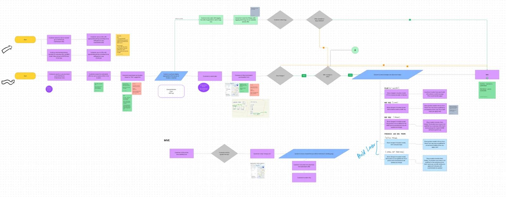
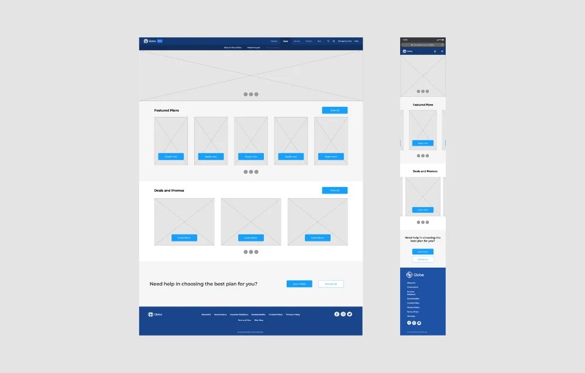
🧭 Designing for Focus and Speed
With user feedback and stakeholder goals in hand, I led the UX and UI design for a compressed, high-impact layout that brought essential details above the fold.
🔹 Key UX Decisions:
• Cut the fold count down to 1.5, surfacing product highlights, benefits, coverage checks, and CTAs right away
• Prioritized flexible payment visibility, GCash, GGives, and GCredit, as major conversion boosters
• Created clean modular content blocks that could scale across campaign variations and future fiber promos
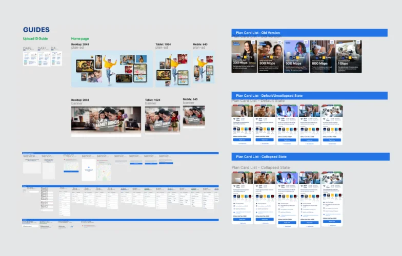
🎥 Side Quest: Motion Graphic Video for Globe Fiber LED TV Ad
Produced motion graphic video for Globe Fiber advertisment. This video was played on all LED TVs of The Globe Tower at Taguig, BGC with viewers of 8,339 employees for the entire month of August.
🎨 Design Execution
I translated our design strategy into low-to-high fidelity wireframes, ensuring layout logic, clarity, and accessibility throughout. The visual tone leaned minimalist and professional, aligned with Globe’s branding, but reworked for speed, responsiveness, and low-friction scanning.
Final deliverables included:
• Responsive landing and product detail pages
• Component libraries for developers
• Full design documentation with performance and accessibility guidelines
All designs were reviewed, refined, and greenlit by Globe’s Digital Growth Team Head, who emphasized the clarity and performance focus.

Outcome
🧪 Validation & Results
Through collaborative QA, user testing, and live A/B analysis, the new design didn’t just meet expectations—it shattered them:
💥 2,000% increase in engagement
Measured via time-on-site and depth of page views, especially in mobile sessions.
💥 600% increase in conversion rate
Fiber sign-up completions spiked dramatically post-launch, with smoother app-to-web redirection flows via GlobeOne.
User feedback:
• Users found the new design cleaner and easier to use.
• Users said they could quickly find what they needed without endless scrolling.
• Users shared that applying was fast and hassle-free with GCash integration.
The reimagined Globe Fiber website is a prime example of UX clarity driving business growth. By simplifying layout, front-loading essential content, and aligning with user expectations, we turned what was once a drop-off funnel into a conversion engine that is one fold at a time.
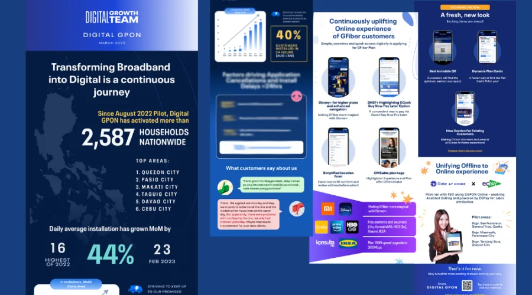
Explore Other Case Studies
Pocket Habitat
AR Wildlife Companion
Gaming/AR · Camera-Based, AI-Powered Creature Collection
Project Overview
Pocket Habitat is an AR wildlife companion concept built around camera-based, AI-powered creature collection — turning real-world exploration into a living, discoverable habitat.
[1–2 sentences on who Pocket Habitat is for and the core problem or desire it taps into — e.g. the appeal of Pokémon GO-style collection, but grounded in real wildlife/environments.]
[1–2 sentences on your role and how the project came about — self-initiated concept, portfolio exploration, or client-based.]
Details
- Role[e.g. Product Designer]
- IndustryGaming / AR
- Platform[e.g. Mobile App]
- Timeline[e.g. Aug – Sep 2026]
- Team[e.g. Solo / Self-Initiated]
- Tools[e.g. Figma]
Design Process
🔍 [Research / Problem Framing Stage Title]
[Describe the starting point — what sparked the concept, what gap in AR/creature-collection games you noticed, and who you imagined it for.]
Key insights:
• [Insight 1 — e.g. what makes camera-based AR collection feel different from map-based collection]
• [Insight 2 — e.g. friction points in comparable AR/wildlife apps]
• [Insight 3 — e.g. what would make players want to return daily]
🧭 [Core Loop / Concept Definition Stage Title]
[Describe the core gameplay loop — how camera-based capture, AI-powered creature identification, and habitat-building fit together, and what design decisions shaped the MVP scope.]
🔹 Key UX decisions:
• [Decision 1 — e.g. how the camera capture flow works]
• [Decision 2 — e.g. how the AI identifies and generates a "creature" from a real photo]
• [Decision 3 — e.g. how the habitat/collection view is structured]
🎨 Design Execution
[Describe how the concept was translated into wireframes and a full UI system — visual style, tone, and any AR-specific interface considerations.]
Final deliverables included:
• [e.g. Complete mobile UI kit and design system]
• [e.g. Camera capture, creature reveal, and habitat/collection flows]
• [e.g. Accessibility and onboarding considerations for first-time AR users]
Outcome
🧪 Where Pocket Habitat Stands
[Summarize current status — e.g. concept stage, wireframes complete, prototype in progress, or next milestones.]
• [Outcome/metric 1]
• [Outcome/metric 2]
🚧 What's Ahead
[Describe the remaining challenges or open questions — e.g. AI creature-generation accuracy, real-world testing, or scoping a playable prototype.]
[1–2 sentence closing reflection tying Pocket Habitat back to your design thinking and what it demonstrates about how you work.]
Explore Other Case Studies
Beyond UX
Creative Work
The visual craft behind the product thinking — motion, animation, and design assets from brand and personal projects.
Motion Graphics
Film & Animation
Brand films, title sequences, and motion work — opens on YouTube.


Visual Design
Posters, Layouts & Design Assets
Selected pieces from brand and personal projects. Click any image to view full size.
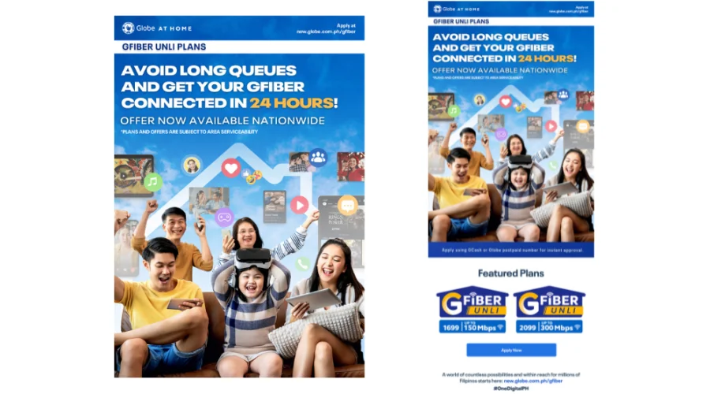


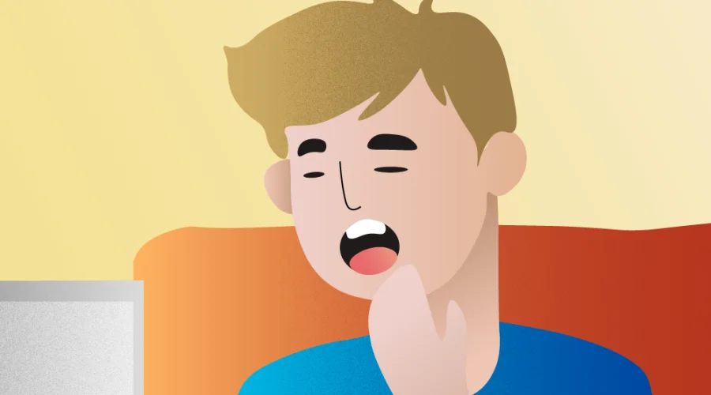

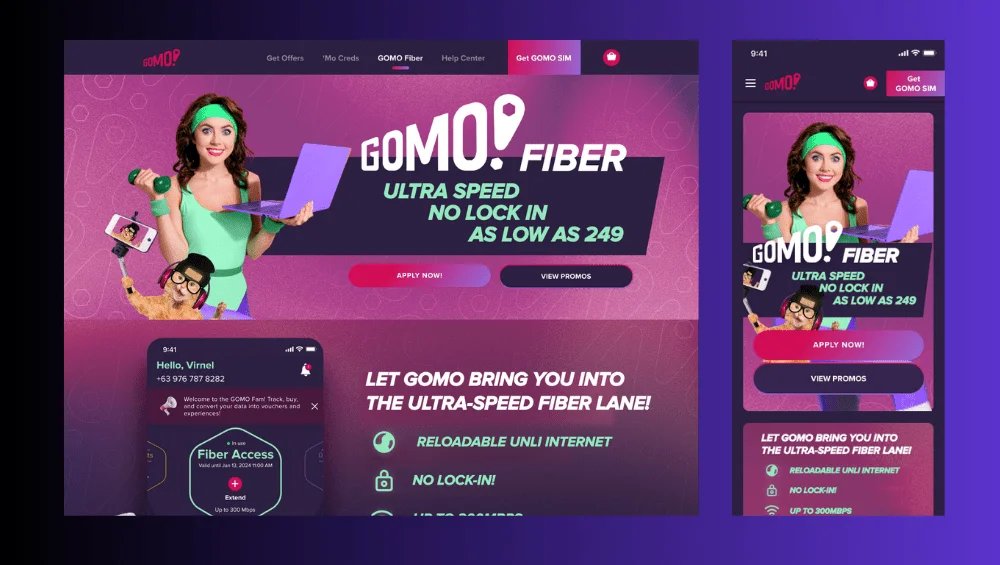


About Me

BA Multimedia Arts, DLS-CSB
Virnel Louise De Guzman
I'm a Senior Product Designer with over 6 years of cross-sector experience spanning telecommunications, healthcare, and government-adjacent work. My practice sits at the intersection of research craft, product strategy, and systems thinking. I design not just screens, but the logic and language underneath them.
I bring a proven track record of translating complex user needs into scalable, business-aligned design solutions, contributing to a ₱15M contract win, 2,000% engagement uplift, +82.8 NPS improvement, and ₱20.9M in commissions saved. At Yondu and Asticom (both Globe Telecom), I led UX across healthcare, telco, and consumer platforms including Chong Hua Hospital, Globe Online, Globe Fiber, GOMO, and 917Ventures products. At W Soft Labs (South Korea), I owned end-to-end design across Korean client platforms spanning housing, academic management, kiosk, and online printing. Through independent consultancy and earlier agency roles at Designblue Philippines and LOKAL Agency, I delivered work for clients including VLDG Security Agency, Del Monte, Suntrust, and Aboitiz.
I am currently pursuing an MBA major in Information Technology at De La Salle University and hold a Bachelor of Arts in Multimedia Arts from De La Salle–College of Saint Benilde, where I also served as President and Creative Director of a Japanese culture organization, leading creative direction, partnerships, and community engagement across the student body.
Core Skills